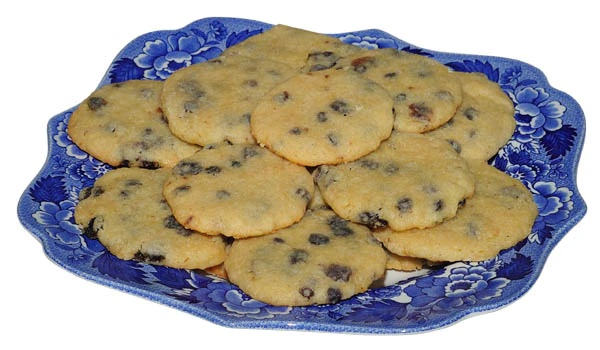

Regency Rout Cakes

Rout Cakes
Delicious little cakes that even Mr. Darcy will find more than tolerable
Ingredients
- 1¼ cup all-purpose flour
- Pinch salt
- 4 Tbsp butter, softened
- 1/3 cup caster (superfine) sugar
- 1 small egg
- 4½ tsp orange juice
- ½ tsp rose-water
- 1 tsp sweet white wine or sherry
- 1 tsp brandy
- ¼ cup currants
- Makes 16-20
Directions
- Set the oven to heat to 350.
- Sift the flour and salt into a bowl.
- Work in the butter to make a crumbly mixture, then add the sugar.
- In a small bowl, beat the egg until liquid.
- Add the juice, rosewater, wine or sherry, and brandy. Stir well.
- Then mix the liquids by degrees into the dry goods, to obtain a smooth dough.
- Lastly mix in the fruit.
- Put the cake mixture in small, neat heaps (3/4" across) on a lightly greased baking-sheet.
- Bake in the oven for 16-18 minutes. Cool on a wire rack.